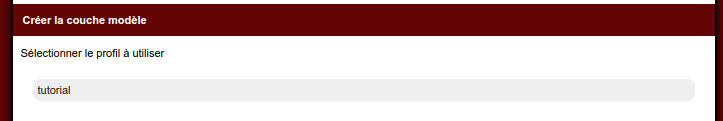

Episode 2: Builder: couche modèle
I. Introduction
Dans cet épisode, on voit comment le builder peut nous générer notre couche modèle.II. Ouvrez le builder
Ouvrez votre navigateur à l'adresse du builder.Créez une application "vide" nommé "test"
Cliquez sur le lien "Editer le projet"
On peut voir que le menu du builder se divise en plusieurs partie:
- Couche modèle
- Modules
- Modules intégrable
- Vues
- Base de données embarquées
III. Création de la couche modèle
III.1 Introduction
Le mkframework s'articule autour d'une architecture MVC*Il utilise un ORM** pour interagir avec la/les base de données (mysql, ms sql, postgresql, oracle, firebird, xml, csv et json)
*MVC: Modèle Vue Controlleur
**ORM: Object Relation Mapping
III.2 Utilisons le builder
Nous souhaitons connecter notre application à la base mysql tutorialDb.Celle-ci contient 3 tables:
- article
- auteur
- users
Cliquez sur le lien "Créer la couche modèle"
Le builder vous liste ici les profils disponibles dans votre fichier conf/connexion.ini.php*
* celui de votre projet dans le répertoire data/genere du framework
Ce fichier contient le code suivant:
;<?php die()?>
[db]
mysqlExple.dsn="mysql:dbname=blog;host=localhost"
mysqlExple.sgbd=pdo_mysql
mysqlExple.username=root
mysqlExple.password=root
pdoPostgresqlExple.dsn="pgsql:dbname=postgres;host=localhost"
pdoPostgresqlExple.sgbd=pdo_pgsql
pdoPostgresqlExple.username=postgres
pdoPostgresqlExple.password=root
pdoMysqlExple.dsn="mysql:dbname=blog;host=localhost"
pdoMysqlExple.sgbd=pdo_mysql
pdoMysqlExple.username=root
pdoMysqlExple.password=root
pdoSqliteExple.dsn="sqlite:/var/www/test4.sqlite"
pdoSqliteExple.sgbd=pdo_sqlite
pdoSqliteExple.username=root
pdoSqliteExple.password=root
firebirdExple.dsn="firebird:host=localhost;dbname=/var/www/firebirdDb"
firebirdExple.sgbd=pdo_firebird
firebirdExple.username=root
firebirdExple.password=root
xmlExple.dsn=
xmlExple.sgbd=xml
xmlExple.database=../data/xml/base/
csvExple.dsn=
csvExple.sgbd=csv
csvExple.database=../data/csv/base/
sqlserverExple.dsn="dblib:dbname=blog;host=localhost"
sqlserverExple.sgbd=pdo_mssql
sqlserverExple.username=root
sqlserverExple.password=root
jsonExple.dsn=
jsonExple.sgbd=json
jsonExple.database=../data/json/base/
Ce sont des exemples de configuration.
Ici, nous allons nous connecter à une base mysql, donc on va supprimer tout sauf
;<?php die()?>
[db]
pdoMysqlExple.dsn="mysql:dbname=blog;host=localhost"
pdoMysqlExple.sgbd=pdo_mysql
pdoMysqlExple.username=root
pdoMysqlExple.password=root
;<?php die()?>
[db]
tutorial.dsn="mysql:dbname=tutorialDb;host=localhost"
tutorial.sgbd=pdo_mysql
tutorial.username=root
tutorial.password=root

Il ne liste plus qu'un profil, celui renseigné précédemment.
Cliquez dessus:
Pour explication: le builder se connecte en utilisant le profil de connexion sélectionné et liste ainsi les différentes tables visibles.
Nous souhaitons afficher la liste des articles avec les noms d'auteurs plutôt que la clé, nous souhaitons également pouvoir choisir l'auteur via un menu déroulant.
Pour cela, cochez la case "Retourne un tableau avec" et sélectionnez comme valeur "nom"
Pour information, le fait de faire ceci ajoutera à la classe modèle généré une méthode "getSelect()" qui retournera un tableau indexé.
Cette méthode sera utilisée afin de faciliter l'utilisation de menu déroulant.
Cochez uniquement les tables auteur et article puis générez.
IV Analysons la couche modèle
Une fois le formulaire validé, le builder génère deux classes modèleOn peut bien retrouver les deux classes dans notre application
Par exemple la classe modèle model_article.php qui contient deux classes: model_article et row_article
Analysons d'abord la première.
Classe model_article
<?php
class model_article extends abstract_model{
protected $sClassRow='row_article';
protected $sTable='article';
protected $sConfig='tutorial';
protected $tId=array('id');
public static function getInstance(){
return self::_getInstance(__CLASS__);
}
public function findById($uId){
return $this->findOne('SELECT * FROM '.$this->sTable.' WHERE id=?',$uId );
}
public function findAll(){
return $this->findMany('SELECT * FROM '.$this->sTable);
}
}
protected $sClassRow='row_article';
On peut voir la variable $sClassRow qui contient le nom de la classe à utiliser lors de l'hydratation.L'hydratation consiste lors de la récupération des enregistrements en base à l'action d'instancier une classe et de la renseigner avec les valeurs issues de la base.
Par exemple pour les article, ça revient faire pour la récupération de plusieurs article:
$monTableau=array();
while($tRow = recuperation issu de la base){
$oArticle=new row_article($tRow);
$monTableau[]=$oArticle;
}
protected $sTable='article';
Cette variable contient le nom réel de la table en base de donnéesprotected $sConfig='tutorial';
Ici, on a le nom du profil de connexion à utiliser.Ainsi, on peut facilement avoir des tables stockées sur des bases différentes.
Pour rappel renseigné dans le fichier conf/connexion.ini.php
protected $tId=array('id');
Là, on stoque le champ de la clé primaire.Et pour la classe row_article
classe row_article
class row_article extends abstract_row{
protected $sClassModel='model_article';
/*exemple jointure
public function findAuteur(){
return model_auteur::getInstance()->findById($this->auteur_id);
}
*/
/*exemple test validation*/
private function getCheck(){
$oPluginValid=new plugin_valid($this->getTab());
/* renseigner vos check ici
$oPluginValid->isEqual('champ','valeurB','Le champ n\est pas égal à '.$valeurB);
$oPluginValid->isNotEqual('champ','valeurB','Le champ est égal à '.$valeurB);
$oPluginValid->isUpperThan('champ','valeurB','Le champ n\est pas supé à '.$valeurB);
$oPluginValid->isUpperOrEqualThan('champ','valeurB','Le champ n\est pas supé ou égal à '.$valeurB);
$oPluginValid->isLowerThan('champ','valeurB','Le champ n\est pas inférieur à '.$valeurB);
$oPluginValid->isLowerOrEqualThan('champ','valeurB','Le champ n\est pas inférieur ou égal à '.$valeurB);
$oPluginValid->isEmpty('champ','Le champ n\'est pas vide');
$oPluginValid->isNotEmpty('champ','Le champ ne doit pas être vide');
$oPluginValid->isEmailValid('champ','L\email est invalide');
$oPluginValid->matchExpression('champ','/[0-9]/','Le champ n\'est pas au bon format');
$oPluginValid->notMatchExpression('champ','/[a-zA-Z]/','Le champ ne doit pas être a ce format');
*/
return $oPluginValid;
}
public function isValid(){
return $this->getCheck()->isValid();
}
public function getListError(){
return $this->getCheck()->getListError();
}
public function save(){
if(!$this->isValid()){
return false;
}
parent::save();
return true;
}
}
Ainsi tous les objets retournés auront accès aux méthodes définies ici.
private function getCheck()
Cette méthode est appelée à l'enregistrement pour vérifier la cohérence des données.Vous avez des exemples de contraintes que vous pouvez ajouter